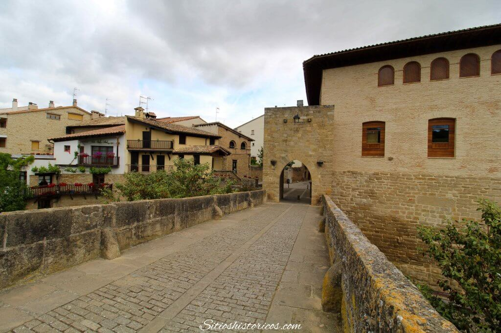
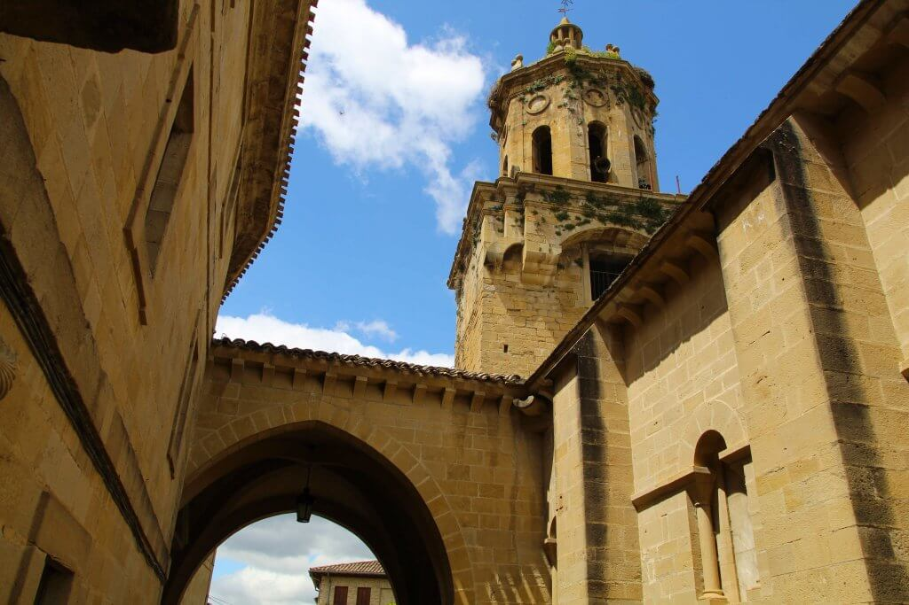
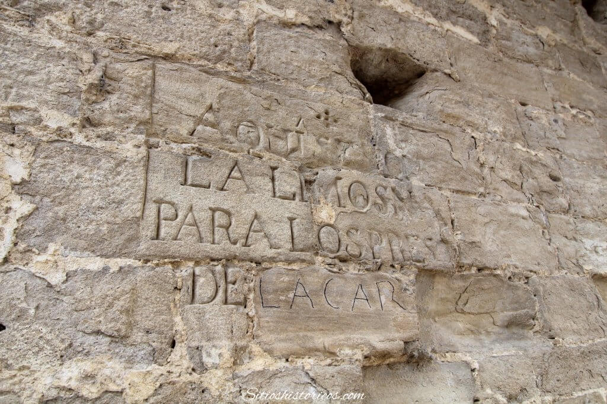

Historia de Puente La Reina

Durante la Edad Media, eran miles los peregrinos que allende los pirineos, se internaban a través de la cadena montañosa, con la intención de llegar hasta Compostela para visitar el sepulcro del Apóstol. Los que llegaban a través del Camino francés, podían hacerlo atravesando el puerto de Roncesvalles (Orreaga en euskera) o el de Somport. Según la leyenda, en el Reino de Navarra, en la unión de los dos vertientes del Camino francés, una reina financió la creación de un robusto puente de piedra para que los peregrinos pudiesen cruzar el río.
La pequeña población que existía antes de la construcción del puente, fue creciendo y asentándose a los lados del Camino Jacobeo. Pero fue a principios del siglo XII, cuando el rey Alfonso I el Batallador, en su afán repoblador, concedió al nuevo burgo el «fuero de Estella», facilitando que nuevos pobladores de origen francés, se asentasen en Puente la Reina en 1122.
Sin embargo, aunque el nuevo burgo, ofrecía prometedoras oportunidades comerciales debido a los miles de peregrinos que pasaban por la localidad, la zona llana en la que se encontraba la hacían difícil de defender.
Para ello, Puente la Reina fue protegida con una poderosa muralla. La fortificación, se componía de una primer cerco, en cuyo interior se encontraba la mayor parte de la población. Este primer cerco estaba protegido por una barbacana y un lienzo exterior.
Con el aumento de la población, también surgió la necesidad de cubrir sus necesidades espirituales, por lo que se construyeron la parroquia de Santiago en la Rua Mayor, y la de San Pedro en el barrio de La Población. Durante la Edad Media, los pobladores de Puente la Reina se dividían en dos grupos, los autóctonos navarros, y los colonos francos. Además, también existía una comunidad judía que contaba con sinagoga para practicar sus cultos.
Con la finalidad de auxiliar a los peregrinos que pasaban por Puente la Reina, se establecieron varias ordenes militares, como la del Temple. Cuando esta orden fue desarticulada en 1312, sus propiedades pasaron a manos de los caballeros de la Orden de San Juan de Jerusalén.
Los reyes navarros, debían sentir predilección por Puente la Reina, ya que mandaron construir un Palacio Real en la villa. Los últimos reyes del Viejo Reyno, Juan III de Albret y su esposa Catalina I, otorgaron el privilegio de celebrar una feria anual, tradición que se conservó hasta el siglo XX.
Y fue a comienzos del siglo XVI, cuando el duque de Alba, conquistó el pequeño reino navarro, anexionándolo a Castilla. Sin embargo, aunque después de la anexión, el cardenal Cisneros ordenó destruir la mayoría de fortalezas navarras, indultó las murallas que protegían a Puente la Reina. Un inventario de 1539, refería que la fortificación contaba con 15 torres y 4 portales de acceso.
Durante los dos siglos siguientes, Puente la Reina vivió un buen ciclo económico, gracias en gran parte a las remesas que muchos puentesinos que habían hecho las américas, enviaban a su pueblo de origen, y del que se beneficiaron las iglesias de Puente la Reina.
Ya en el siglo XIX, Puente la Reina, o Gares, como se llama en euskera, se vio sacudida por los conflictos y la profunda transformación que sufrió el país.
Durante la Guerra de la Independencia española, Puente la Reina fue ocupada por un destacamento francés, que destruyó la ermita de San Gregorio para construir un fortín. A finales de 1809, la partida del guerrillero Javier Mina, destruyó el puente románico para evitar el paso de los soldados napoleónicos.
Durante la Guerra Realista, los partidarios de Fernando VII sufrieron varias derrotas en Navarra, hasta que en octubre de 1823 tomaron Pamplona. Entonces los costitucionalistas navarros sufrieron la persecución de sus adversarios. En Puente la Reina, los liberales fueron encarcelados en el convento del Crucifijo.
Durante la Segunda guerra carlista (1872-1876), Puente la Reina también fue un lugar clave en Navarra. En octubre de 1873, el general cristino Moriones, marchó desde aquí con la intención de tomar Estella, la considerada como capital simbólica del carlismo. Sin embargo, la acción salió mal y las tropas liberales se tuvieron que replegar hasta Puente la Reina. No sería hasta 1876, cuando el general liberal Martínez Campos entrase en Estella-Lizarra.